Sunwah Fintech iOS — 产品需求文档（PRD）
一、项目概述
| 项目项 | 内容 |
|---|---|
| 产品定位 | 面向机构 / 高净值投资者的 iOS 投资智能助手 |
| 核心闭环 | 市场情报 → ETF / 结构化产品研究 → 组合诊断 → Assistant 解释与建议 → 决策辅助 |
| 交付物 | 单页交互式网页原型，用于评审页面结构、模块边界、用户旅程与交互状态 |
| 试点目标 | 可登录、可浏览四大核心模块、可模拟 User / Admin 权限、可查看核心 loading / error / empty / drawer / sheet 状态 |
| 不做范围 | 交易执行 · 正式受监管投顾 · Level II / tick 实时行情 · 真实下单 · 真实 PDF OCR 服务 · Web/Android 生产客户端 |
1.1 产品边界 Guardrails
- No Trading / Buy Flows Included
- No Guaranteed Return Claims
- No Licensed Advice / Execution UI
1.2 产品架构图
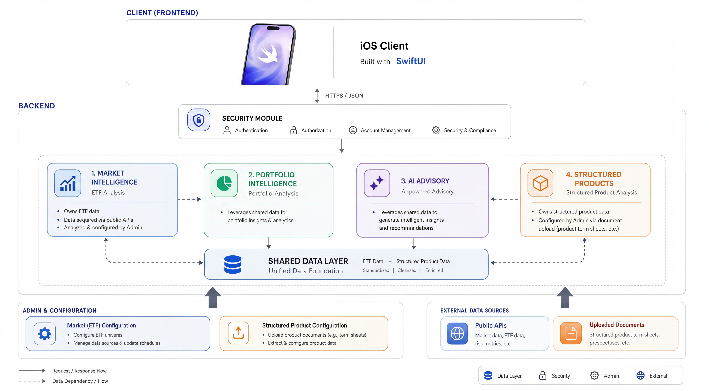
二、用户定义
2.1 Persona
| User | Admin | |
|---|---|---|
| 角色 | 投资者、研究者 | 数据管理员 |
| 描述 | 使用 App 浏览市场、构建组合、获取 AI 辅助建议 | 维护 ETF 和结构化产品数据，确保平台内容完整 |
| 核心能力 | Market / Portfolio / AI Advisory / Products / Profile | User 全部能力 + ETF 配置 + 结构化产品配置 |
2.2 角色权限矩阵
| 功能 | User | Admin |
|---|---|---|
| 市场情报 | 浏览、筛选、详情、对比 | + 添加 ETF |
| 结构化产品 | 浏览、筛选、详情、对比 | + 上传 PDF、字段抽取、发布 |
| Admin Tools | - | 仅 Admin 可见 |
| 其他模块 | 完全一致 | 完全一致 |
三、页面结构
3.1 入口与页面树
3.2 页面目录
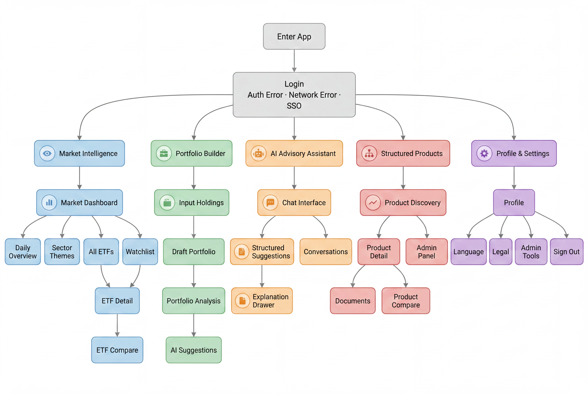
| 模块 | 页面路径 |
|---|---|
| Market Intelligence | Market Dashboard → Daily Overview / Sector Themes / All ETFs / Watchlist → ETF Detail → ETF Compare |
| Portfolio Builder | Input Holdings → Draft Portfolio → Portfolio Analysis → AI Suggestions |
| AI Advisory | Chat Interface → Structured Suggestions / Explanation Drawer；Conversations |
| Structured Products | Product Discovery → Product Detail（Overview / Performance / Note Events / Documents）→ Product Compare；Admin Panel |
| Profile & Settings | Profile → Language / Legal / Admin Tools / Sign Out |
四、功能模块
4.0 模块概览
第四章涵盖四个核心功能模块，每个模块按统一结构组织：
| 模块编号 | 模块名称 |
|---|---|
| 4.1 | Market Intelligence |
| 4.2 | Portfolio Intelligence |
| 4.3 | AI Advisory |
| 4.4 | Structured Products |
4.0.1 模块结构
每个功能模块包含以下四个子章节：
| 子章节 | 说明 |
|---|---|
| 功能概述 | 用户能力边界、数据输入输出、系统限制 |
| 页面介绍 | 原型截图与页面功能说明 |
| User Stories | 用户旅程与核心场景 |
| Acceptance Criteria | 验收标准 |
4.0.2 Acceptance Criteria 设计标准
分类标签体系
AC 条目前缀标识验收项的类型：
| 前缀 | 类型 | 说明 |
|---|---|---|
| UI | 界面层 | 布局、组件、状态展示 |
| Flow | 流程层 | 用户旅程、页面流转、操作触发 |
| Data | 数据层 | 数据展示、校验、业务规则 |
| Access | 权限层 | 角色隔离、入口可见性 |
| Compliance | 合规层 | 免责声明、风险提示 |
归属定义
| 归属 | 定义 |
|---|---|
| Frontend | 前端独立实现，无需后端支持 |
| Backend | 后端独立实现，前端仅负责调用 |
| Integration | 前后端协同，需明确接口契约 |
优先级定义
| 优先级 | 定义 |
|---|---|
| Must | 必须实现，阻塞发布 |
| Should | 强烈建议，影响核心体验 |
| Could | 可选实现，提升用户满意度 |
表格格式
| ID | Content | References | Ownership | Priority |- ID：类型前缀 + 序号，序号跨模块共享
- Content：验收项描述
- References：对应页面、User Story 或功能章节
- Ownership：Frontend / Backend / Integration
- Priority：Must / Should / Could
4.0.3 Profile & Settings
该模块功能相对简单，AC 合并至各模块或非功能性需求章节中。
4.1 Market Intelligence
4.1.1 功能概述
| 能力 | 输入数据 | 输出 | 边界 |
|---|---|---|---|
| ETF Market Overview | ETF / 指数延迟行情 | 市场宽度、成交量、Rising / Flat / Falling、Return Distribution、ETF Rankings | 不做实时交易流 |
| Sector Themes | ETF basket / sector mapping | Default sectors + Daily Hot sectors、Sector Detail | 仅为研究入口，不构成推荐 |
| Market Indices | Hang Seng / HS Tech / S&P 500 等指数数据 | 指数卡片与涨跌幅 | 原型使用模拟 / delayed 数据 |
| ETF Screener | 搜索词、分类、地区、行业、发行人、币种、排序 | ETF 列表、空状态、active filter badge | 不接 Level II |
| My Watchlist | 用户星标 ETF | Watchlist 列表 / 空状态 | 仅研究关注，不做交易提醒 |
| ETF Detail | ETF symbol | 价格图、风险指标、分类、新闻、AI 分析入口 | HKEX delayed disclosure |
| ETF Compare | 两只 ETF | 标准化价格曲线与指标对比 | 原型限 2 ETF 对比 |
| Admin ETF Maintenance | ticker id | Fetch preview → Add to Platform → 更新 Screener | 仅 Admin 可见 |
4.1.2 页面介绍
4.1.3 User Stories
M-1：浏览 ETF 详情
用户类型：User | 需求：从 Market Dashboard 通过 Watchlist 预览、板块主题、自选 ETF 入口进入 ETF 详情页，查看 K 线图、风险指标、AI 评分等数据，且可以加入 watchlist 持续关注 | 价值：快速获取任一关注 ETF 的完整研究上下文
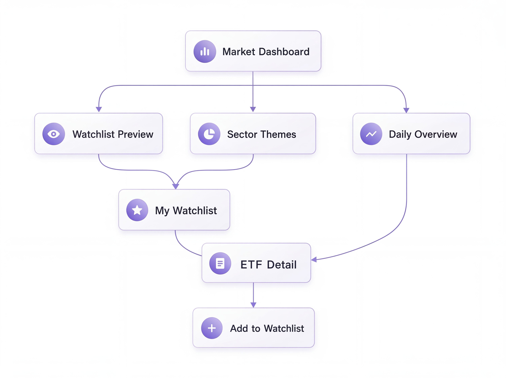
M-2：筛选搜索 ETF
用户类型：User | 需求：通过 All ETFs 筛选器，使用 Filter 或关键词匹配找到目标 ETF 并进入详情页 | 价值：将模糊需求转化为具体可研究的 ETF 标的
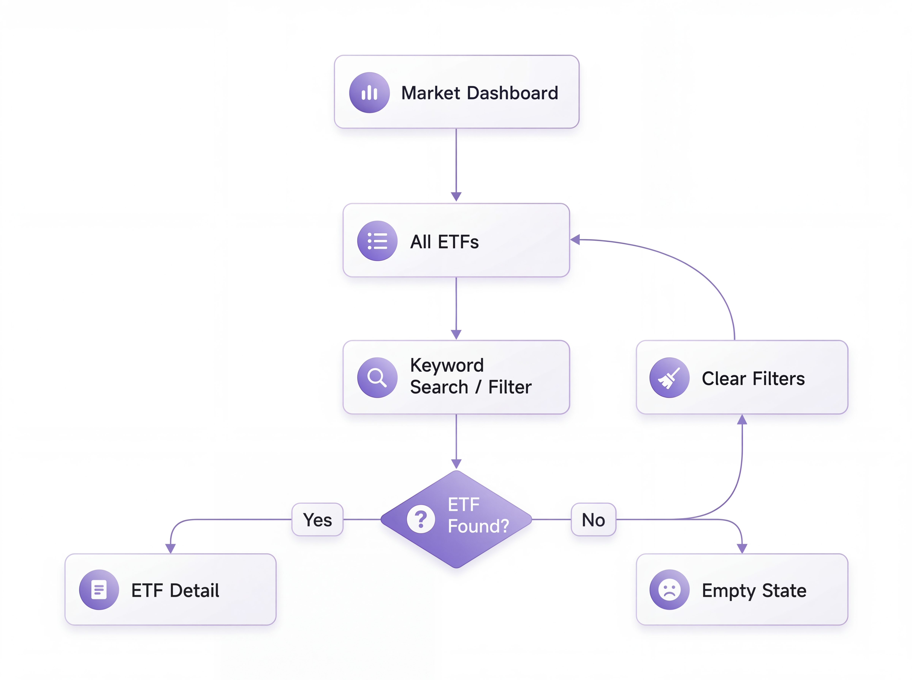
M-3：对比 ETF
用户类型：User | 需求：在 ETF 详情页点击 Compare，选择第二只 ETF 进入 Compare 页面，对比两只 ETF 的业绩、费用、风险等指标 | 价值：辅助选品决策
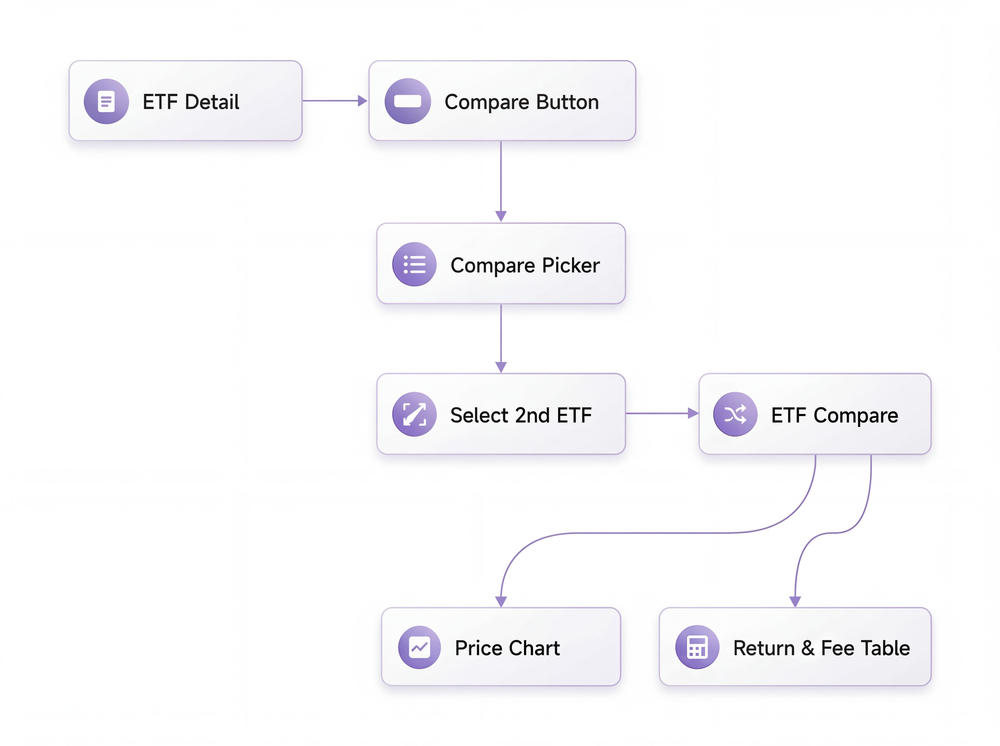
M-4：维护 ETF 列表
用户类型：Admin | 需求：通过 Add ETF by ID 页面，按 ticker 添加新 ETF 到平台，维护 Screener 可检索的产品范围 | 价值：确保用户端 ETF 研究入口数据完整、可追溯
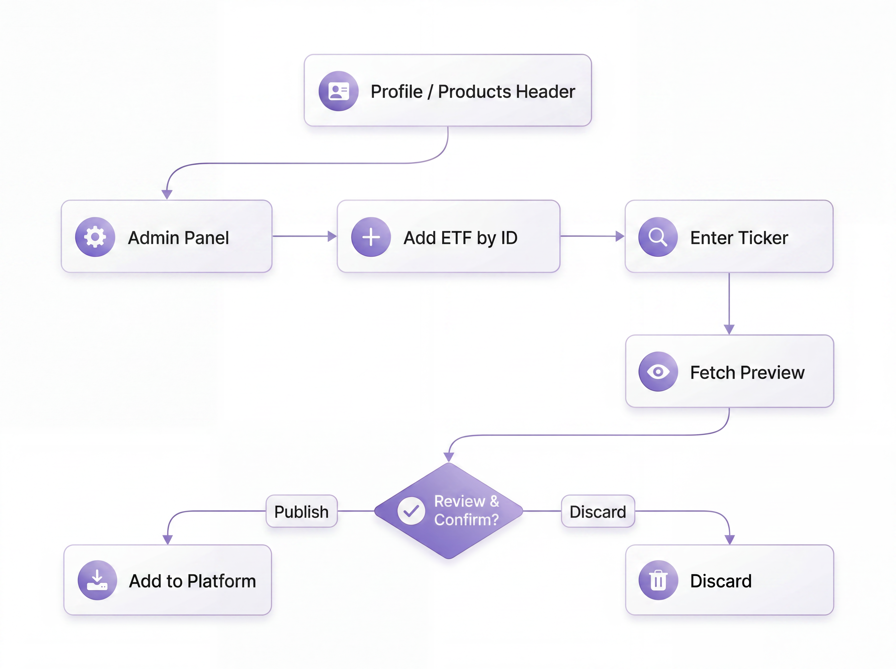
4.1.4 Acceptance Criteria
| ID | Content | References | Ownership | Priority |
|---|---|---|---|---|
| UI-001 | Dashboard 默认展示 ETF 市场概览、板块、今日热门、市场指数、自选预览和全部 ETF 入口。 | 4.1.2 Market Dashboard | Frontend | Must |
| UI-002 | Dashboard 在数据加载中展示骨架屏，加载失败时展示错误状态和重试按钮。 | 4.1.2 Skeleton/Error states | Integration | Must |
| UI-003 | 筛选无结果时展示空状态，显示"无匹配 ETF"提示和清除筛选按钮。 | 4.1.2 Empty State; M-2 | Frontend | Must |
| UI-004 | ETF 详情页展示时间区间图表、概览/新闻标签页、自选切换和快捷对比按钮。 | 4.1.2 ETF Detail; M-1 | Integration | Must |
| Flow-001 | 用户可从自选预览、板块卡片或今日热门直接进入对应 ETF 详情页。 | M-1 User Story flowchart | Frontend | Must |
| Flow-002 | 用户可在 ETF 详情页点击对比按钮，通过对比选择器搜索选择第二只 ETF，进入 ETF 对比页面。 | M-3; 4.1.2 Compare Picker | Integration | Must |
| Flow-003 | 管理员可访问按 ID 添加 ETF 页面；普通用户无法看到或访问此入口。 | M-4; 4.1.2 Admin entry | Frontend | Must |
| Data-001 | ETF 筛选器在用户输入或切换筛选条件时实时过滤结果，并同步更新数量统计。 | M-2; 4.1.2 Filter Sheet | Integration | Must |
| Data-002 | ETF 对比页以统一基准展示标准化价格曲线，并左右对齐展示指标对比表格。 | M-3; 4.1.2 ETF Compare | Integration | Must |
| Compliance-001 | 市场数据页面展示数据延迟免责声明（如"港交所数据延迟 15 分钟"）。 | 1.2 Guardrails | Frontend | Must |
4.2 Portfolio Intelligence
4.2.1 功能概述
| 阶段 | 用户动作 | 系统输出 | 关键指标 |
|---|---|---|---|
| 输入 | Photos / Document 上传、粘贴文本、Add ETF、Add Structured Product、套用模板 | Draft Portfolio（symbol、qty、cost、market value、weight、P&L） | qty · cost · marketValue · weight · currency |
| 复核 | 点击 Review holdings | 草稿持仓可读列表、总市值、权重与 P&L 汇总 | holdings count · total value · weight |
| 分析 | 点击 Analyze draft portfolio | 四步 checklist、评分卡、HHI、Effective N、敞口图、Diagnosis Issues | HHI · Effective N · sector / region / currency |
| 建议 | 点击 Generate Recommendations | AI Portfolio Recommendations、Selected diagnosis scope、Before / After、具体调整动作、rationale、impact | Health Score · HHI target · exposure change |
| 历史 | 打开 Portfolio History Drawer | Portfolio History / Saved snapshots | date · total value · holdings summary |
4.2.2 Diagnosis Issue 触发规则
| 评分维度 | 计算方式 | Diagnosis Issue | 触发条件 | 严重度 |
|---|---|---|---|---|
| 集中度 | HHI = sum(weight_i²) | High concentration risk | HHI > 0.25 | High |
| 集中度 | HHI = sum(weight_i²) | Moderate concentration | 0.15 < HHI <= 0.25 | Medium |
| 分散化 | Effective N = 1 / HHI | Insufficient diversification | Effective N < 3 | High |
| 地区 | HK / China 权重加总 | Geographic concentration — HK/China | HK / China > 70% | High |
| 汇率 | HKD 权重加总 | FX concentration — HKD | HKD > 70% | Medium |
| 行业 | Tech sector 权重 | Technology sector overweight | Tech > 35% | Medium |
| 防御性 | Fixed Income / defensive 权重 | Insufficient defensive allocation | Fixed Income < 15% | Low |
4.2.3 页面介绍
4.2.4 User Stories
P-1：录入持仓 → 运行组合诊断 → 获取调仓建议
用户类型：User | 需求：通过在 ETF / 结构化产品列表中选择，或上传文本 / 文件 / 图片让 AI 解析转化两种方式录入持仓；运行持仓分析，查看评分与 Diagnosis Issues，可选择接受或放弃部分诊断；最后获取 AI 调仓建议与 Before / After 对比 | 价值：形成可解释的组合风险上下文，并基于诊断获取个性化调仓建议
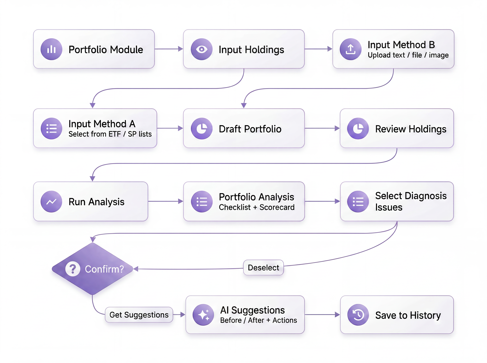
P-2：查看历史持仓分析记录
用户类型：User | 需求：在 Portfolio 模块左上角呼出 History Drawer，浏览历史持仓分析快照，选择任意历史记录恢复到当前 Draft Portfolio | 价值：支持用户回顾和对比不同时间点的组合状态
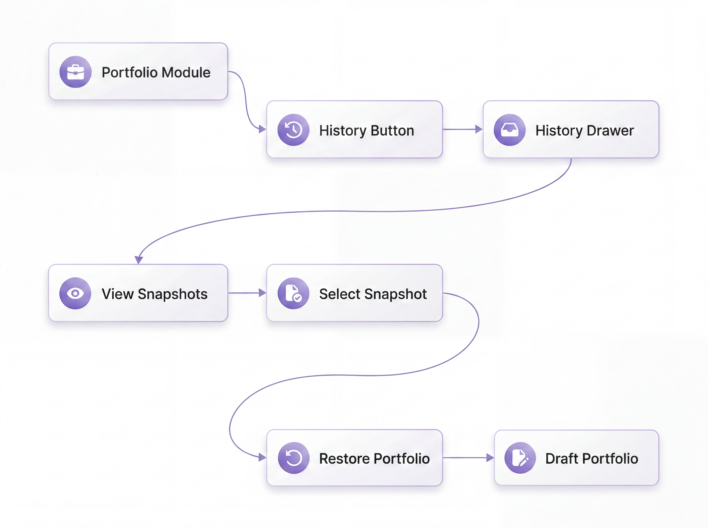
4.2.5 Acceptance Criteria
| ID | Content | References | Ownership | Priority |
|---|---|---|---|---|
| Flow-004 | 组合录入页面同时提供照片上传、文档上传、文本粘贴和手动添加 ETF/结构化产品四种并行输入方式。 | P-1; 4.2.1 Input stage | Frontend | Must |
| Flow-005 | 用户在录入持仓后可触发组合分析；分析过程展示带进度指示的多步骤检查清单。 | P-1; 4.2.3 Analysis page | Integration | Must |
| Flow-006 | 用户可在生成建议前切换单个诊断问题的选中状态，以纳入或排除其对应的建议范围。 | P-1; 4.2.3 Analysis page | Frontend | Must |
| Flow-007 | 用户可从组合模块顶部打开历史抽屉，浏览并恢复历史分析快照。 | P-2; 4.2.4 History Drawer | Frontend | Should |
| Data-003 | 草稿组合展示每个持仓的代码、数量、成本、市值、权重、盈亏和币种。 | P-1; 4.2.1 Input stage | Integration | Must |
| Data-004 | 分析结果展示 HHI 集中度指数、有效数量 N、分行业/币种/地区敞口分布，以及带严重度等级的可选诊断问题。 | P-1; 4.2.2, 4.2.3 | Integration | Must |
| Data-005 | AI 建议展示前后对比表格，以及每条建议的代码、目标权重、理由和预期影响详情。 | P-1; 4.2.3 Recommendations page | Integration | Must |
| Compliance-002 | 组合分析和建议页面底部展示非投资建议免责声明（如"非财务建议，仅供参考"）。 | P-1; 1.2 Guardrails | Frontend | Must |
4.3 Assistant
4.3.1 功能概述
| 能力 | 输入 | 输出 | 说明 |
|---|---|---|---|
| 模式化聊天 | Value focus / Income focus + 用户问题 | 文本回复或结构化建议卡 | 关键词 value / income / HHI 触发结构化结果 |
| Portfolio Context | On / Off | 将当前组合上下文用于回答 | Toggle 高亮并影响组合相关问题 |
| 附件分析 | 图片 / PDF / report | Attachment preview chip + 文件摘要 / 问答 | 原型模拟文件读取 |
| 可解释 Drawer | 点击建议 / Analytical Details | Why this suggestion appeared、What prompted this、Data considered、Assistant interpretation、Limits to this explanation | 提升可追溯性 |
| Conversations | 左侧 Drawer | 会话列表、恢复、删除、New conversation | 管理多轮研究对话 |
| Custom Mode | 点击 + 后用 Prompt 或 Guided Survey 创建 | 新 mode pill | 自定义投资目标、约束、风险偏好 |
4.3.2 页面介绍
4.3.3 User Stories
A-1：通过 Chat 进行问答
用户类型：User | 需求：选择 Value / Income / Custom 模式，配置 Portfolio Context 或附件等工具，输入问题并获取结构化建议与详细解释 | 价值：在不同投资偏好下获得可追溯的研究支持，支持持续追问和上下文延续
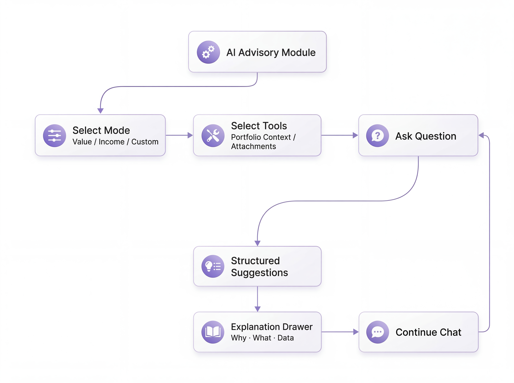
A-2：查看历史对话记录
用户类型：User | 需求：在 AI Advisory 模块左上角呼出 History Drawer，浏览历史会话列表，选择任意历史记录恢复到当前对话 | 价值：支持用户回顾和继续之前的咨询上下文
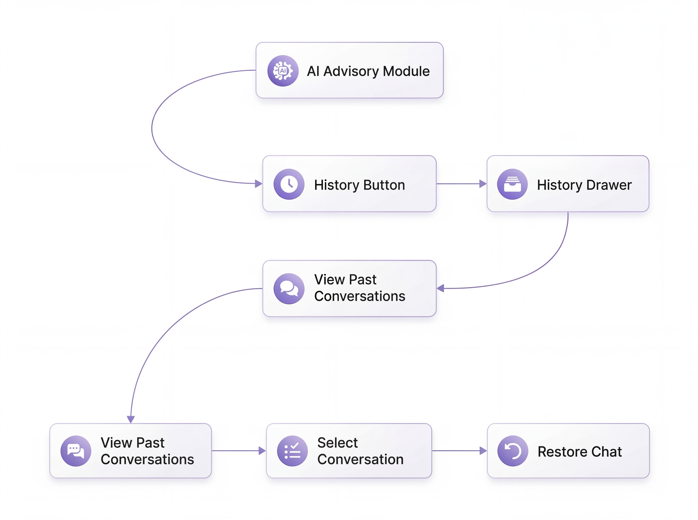
A-3：创建自定义 Mode
用户类型：User | 需求：点击 + 创建自定义 Mode，通过填写 Prompt 或完成问卷（投资期限、风险偏好、收益目标）两种方式生成专属模式，并保存到 Mode 列表 | 价值：让用户根据个人投资需求定制 AI 顾问的行为模式
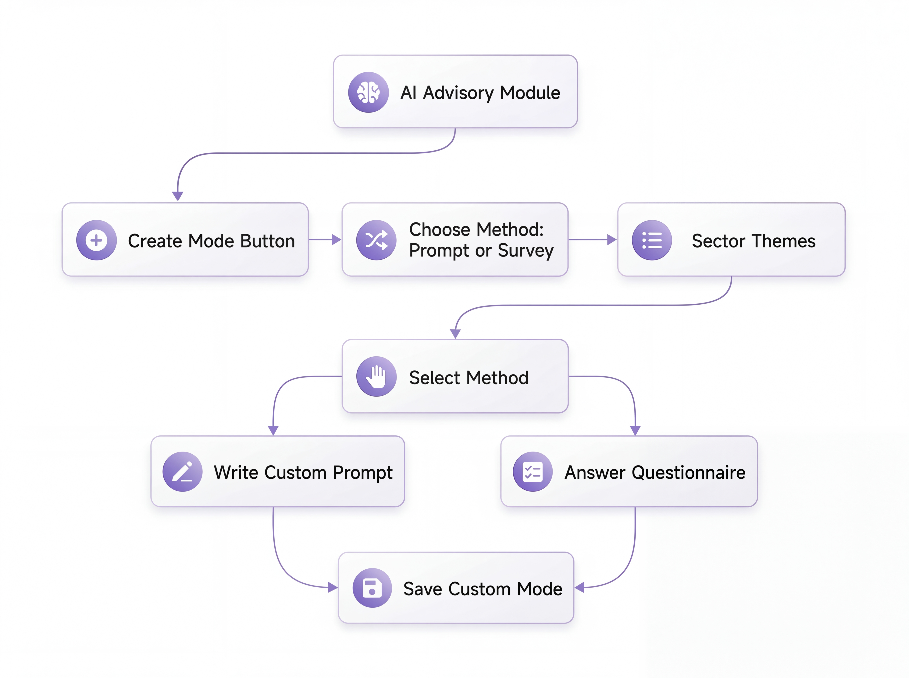
4.3.4 Acceptance Criteria
| ID | Content | References | Ownership | Priority |
|---|---|---|---|---|
| UI-005 | 聊天页面空状态展示示例问题；发送第一条消息后隐藏示例。 | A-1; 4.3.2 Chat page | Frontend | Should |
| UI-006 | 用户消息气泡在发送后立即显示；助手回复前展示打字指示器。 | A-1; 4.3.2 Chat page | Frontend | Must |
| UI-007 | 解释抽屉展示五个部分：本建议出现原因、触发因素、参考数据、助手解读、解释局限性。 | A-1; 4.3.2 Explanation Drawer | Integration | Must |
| Flow-008 | 用户可在价值导向、收益导向和自定义模式间切换；当前激活模式高亮显示并有切换反馈。 | A-1; 4.3.1 Mode capability | Frontend | Must |
| Flow-009 | 用户可切换组合上下文开关；开启时 AI 回答针对相关问题引用当前组合指标。 | A-1; 4.3.1 Portfolio Context | Integration | Must |
| Flow-010 | 用户可打开历史抽屉浏览、恢复或删除历史会话，并开始新对话。 | A-2; 4.3.2 History Drawer | Integration | Should |
| Flow-011 | 用户可通过输入 Prompt 或完成引导问卷创建自定义模式；新创建的模式出现在模式列表中并被激活。 | A-3; 4.3.2 Create Mode | Integration | Should |
| Compliance-003 | AI 建议和推荐不得包含交易执行措辞（如"买入"、"卖出"、"下单"、"执行"）或收益保证声明。 | A-1; 1.2 Guardrails | Backend | Must |
4.4 Structured Products
4.4.1 功能概述
| 能力 | 输入 | 输出 | 边界 |
|---|---|---|---|
| 产品目录 | Issuer list、Smart filters、Advanced search | 产品卡列表、风险 / 期限 / 状态摘要、Screening only 提示 | 仅研究发现，不做交易 |
| Advanced search | 产品类型、结构、标的、barrier、日期、期限、币种、状态等 | 精细过滤后的产品列表 | 原型使用模拟数据 |
| 产品详情 | product id | Overview / Performance / Note Events / Documents | 风险优先展示 |
| Note Events | Bull / Base / Bear | Payoff Story、Outcome selector、Payoff map、Rule quick check | 预设情景，非收益承诺 |
| 当前表现 / Performance | product id | indicative price、implied yield、barrier watch、source、date | 非 firm quote |
| Compare Products | 当前产品 + 同发行人产品 | Tabular Factsheet Matrix 双栏条款对比 | 不跨发行人比较 |
| Admin Panel | PDF Term Sheet | Upload Structured Product Sheet → Select PDF product sheet → Extraction complete → Publish | 仅 Admin 可见 |
| Admin ETF 维护 | ticker id | Add ETF by ID → Fetch preview → Add to Platform | 仅 Admin 可见 |
4.4.2 页面介绍
User 侧页面
Admin 专属页面
4.4.3 User Stories
S-1：浏览结构化产品详情
用户类型：User | 需求：通过 Issuer / Strategy / Risk 等过滤器浏览产品列表，点击产品卡片进入详情页，查看 Overview / Performance / Note Events / Documents 等标签页，并可加入关注列表 | 价值：形成结构化产品研究上下文，帮助理解条款、状态和关键指标
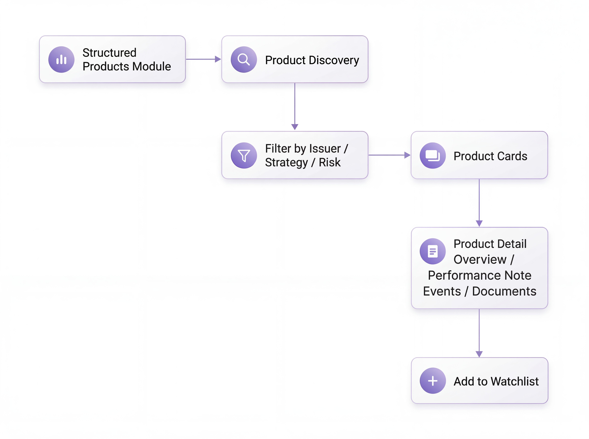
S-2：筛选搜索结构化产品
用户类型：User | 需求：通过 Smart Filters 或 Advanced Search 使用产品类型、标的、barrier、期限、币种等条件筛选产品，找到目标产品后进入详情页 | 价值：将模糊需求转化为具体可研究的产品标的
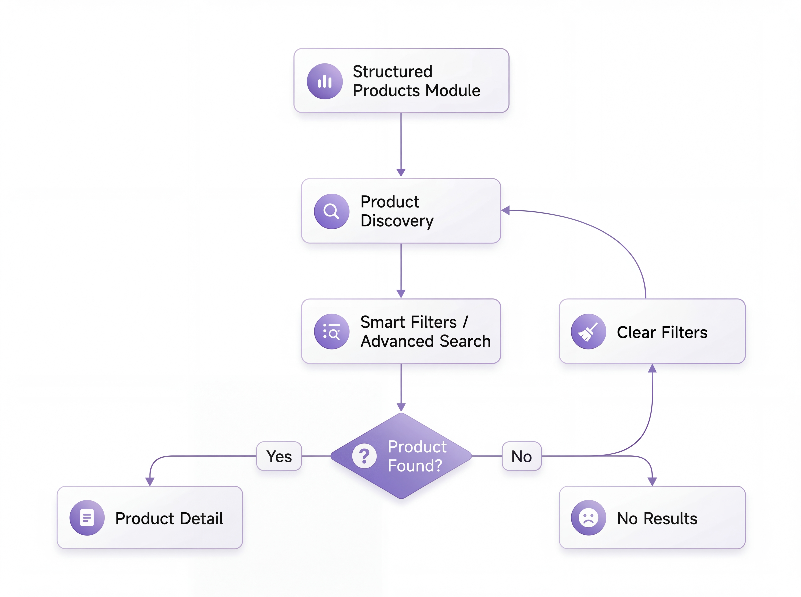
S-3：对比结构化产品
用户类型：User | 需求：在产品详情页点击 Compare，选择同发行人的第二只产品进入 Compare 页面，对比收益结构、票息、barrier、风险等条款信息 | 价值：辅助选品决策，避免跨发行人不可比的产品对比
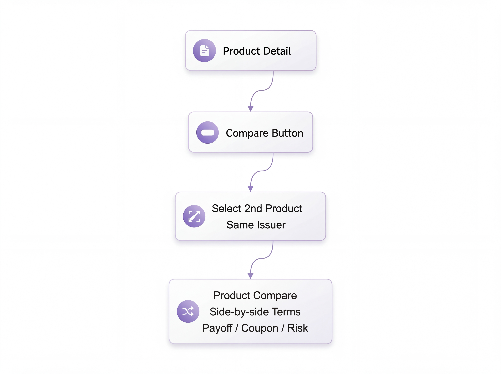
S-4：上传结构化产品 PDF
用户类型：Admin | 需求：通过 Admin Panel 上传结构化产品 term sheet PDF，AI 自动提取字段，管理员审核编辑后 Publish 发布到平台 | 价值：统一维护结构化产品数据，让产品目录保持最新
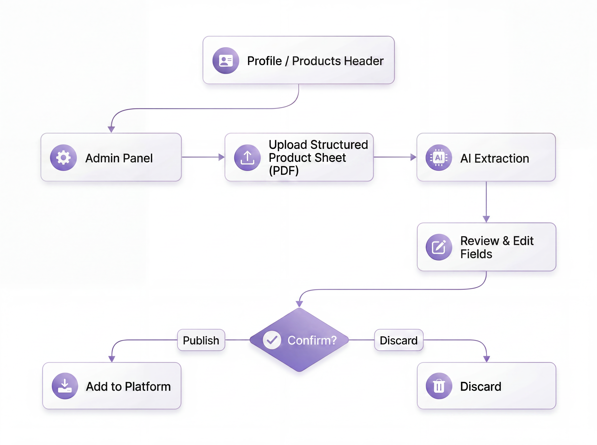
4.4.4 Acceptance Criteria
| ID | Content | References | Ownership | Priority |
|---|---|---|---|---|
| UI-008 | 产品发现页展示"仅供筛选"提示横幅、发行人列表、智能筛选器和高级搜索入口。 | S-1, S-2; 4.4.3 Product list page | Frontend | Must |
| UI-009 | 产品卡展示收益类型、本金处理、 barrier/buffer、发行人、状态、风险等级和适当性提示。 | S-1; 4.4.3 Product list page | Integration | Must |
| UI-010 | 产品详情页渲染概览、表现、情景事件和文档标签页及对应内容。 | S-1; 4.4.3 Detail Overview | Integration | Must |
| UI-011 | 情景事件标签页展示收益故事、情景选择器、收益地图、规则速查和涨跌/中性/熊市情景的规则解释。 | S-1; 4.4.3 Note Events page | Integration | Must |
| Flow-012 | 用户可通过智能筛选或高级搜索筛选产品；无结果时展示空状态和清除操作。 | S-2; 4.4.3 Filter/Search | Integration | Must |
| Flow-013 | 用户可在产品详情页点击对比，通过选择器选择第二只产品（仅限同发行人），进入对比页面。 | S-3; 4.4.3 Compare page | Integration | Must |
| Flow-014 | 管理员可通过管理面板上传结构化产品 PDF；系统展示抽取进度后进入字段审核页面。 | S-4; 4.4.3 Admin Panel | Integration | Must |
| Flow-015 | 管理员可编辑抽取的字段并选择放弃或发布；成功后展示确认反馈。 | S-4; 4.4.3 Extracted Review | Integration | Must |
| Access-001 | 管理面板入口和上传/添加 ETF 功能仅对管理员角色用户可见和可访问。 | S-4; 2.2 Role Matrix | Frontend | Must |
| Compliance-004 | 产品页面展示非交易执行免责声明、非确定报价免责声明和适当性评估提示。 | S-1; 1.2 Guardrails | Frontend | Must |
4.5 Profile & Settings
4.5.1 功能概述
| 能力 | 说明 | 优先级 |
|---|---|---|
| 用户身份 | 展示姓名、邮箱、头像首字母、PRO / ADMIN 标签 | Must |
| Language | EN / 繁中切换，Profile 文案即时切换 | Should |
| Notifications | iOS switch 样式开关 | Should |
| Security & 2FA | 展示安全状态，并提供 2FA 设置入口 | Should |
| Base Currency | 显示基础币种偏好 | Should |
| Legal Links | Terms of Use、Privacy Policy、About | Must |
| Sign Out | 登出并回到 Login | Must |
| Admin Tools | Admin 专属入口，包含 Add ETF by ID 与 Upload Structured Product | Must |
4.5.2 页面介绍
五、非功能性需求
5.1 安全
| ID | 内容 | 参考 | 归属 | 优先级 |
|---|---|---|---|---|
| NFR-Security-001 | App 支持账号密码登录和 Google/Microsoft OAuth 2.0 SSO。 | 5.1 | Backend | Must |
| NFR-Security-002 | 登录错误展示 inline 红色提示；网络错误展示清晰错误文案。 | 5.1 | Frontend | Must |
| NFR-Security-003 | Access Token 存储于 iOS Keychain；过期后静默刷新；登出时撤销本地和服务端 token。 | 5.1 | Frontend | Must |
| NFR-Security-004 | App 进入后台超过 30 分钟需重新认证。 | 5.1 | Frontend | Should |
| NFR-Security-005 | 连续登录失败达到阈值后锁定或要求额外验证。 | 5.1 | Backend | Should |
| NFR-Security-006 | App 支持 TOTP 或企业 SSO 2FA；Profile 展示 2FA 状态。 | 5.1 | Integration | Should |
| NFR-Security-007 | 所有 API 调用使用 TLS 1.2+；生产客户端启用 certificate pinning。 | 5.1 | Frontend | Must |
| NFR-Security-008 | Token、敏感配置和持仓缓存存储于 Keychain 或加密存储。 | 5.1 | Frontend | Must |
| NFR-Security-009 | 持仓数据仅用于当前分析；不写入明文日志。 | 5.1 | Backend | Must |
| NFR-Security-010 | 邮箱和姓名等 PII 在日志和 AI 请求前脱敏或最小化。 | 5.1 | Backend | Must |
| NFR-Security-011 | App 不申请无关权限（位置、通讯录、麦克风）。 | 5.1 | Frontend | Must |
| NFR-Security-012 | 第三方 AI 调用不传入可识别身份信息；输出经过合规过滤。 | 5.1 | Integration | Should |
5.2 权限控制
| ID | 内容 | 参考 | 归属 | 优先级 |
|---|---|---|---|---|
| NFR-Access-001 | 服务端根据账号类型下发角色；前端仅用于显示控制。 | 5.1, 2.2 | Backend | Must |
| NFR-Access-002 | 客户端隐藏控件不作为唯一保护；Admin API 必须服务端鉴权。 | 5.1, 2.2 | Backend | Must |
| NFR-Access-003 | Upload Product、Add ETF、Admin Tools 对普通用户不可见不可访问。 | 5.1, 2.2 | Frontend | Must |
| NFR-Access-004 | 上传、发布、删除、字段修改记录 actor、时间、来源和内容 ID。 | 5.1 | Backend | Should |
5.3 性能
| ID | 内容 | 参考 | 归属 | 优先级 |
|---|---|---|---|---|
| NFR-Performance-001 | Market Dashboard 首屏在 Wi-Fi 冷启动下 2s 内加载完成。 | 5.1 | Integration | Must |
| NFR-Performance-002 | 页面交互响应在 300ms 内（点击到视觉反馈）。 | 5.1 | Frontend | Must |
| NFR-Performance-003 | ETF 数据接口 p95 延迟在正常网络下 800ms 内。 | 5.1 | Backend | Must |
| NFR-Performance-004 | Assistant 打字指示器出现后 3s 内首次响应。 | 5.1 | Integration | Must |
| NFR-Performance-005 | 文件解析（PDF/CSV/图片，5MB 内）含抽取阶段 10s 内完成。 | 5.1 | Integration | Must |
| NFR-Performance-006 | iPhone 13 正常使用内存低于 150MB RSS。 | 5.1 | Frontend | Should |
| NFR-Performance-007 | 所有网络请求展示 Skeleton/Spinner/Error；不白屏。 | 5.1 | Frontend | Must |
| NFR-Performance-008 | 离线模式展示缓存数据并提示离线；写操作禁用并说明原因。 | 5.1 | Integration | Should |
5.4 兼容性
| ID | 内容 | 参考 | 归属 | 优先级 |
|---|---|---|---|---|
| NFR-Compatibility-001 | App 遵循 Apple Human Interface Guidelines (HIG)。 | 5.1 | Frontend | Must |
| NFR-Compatibility-002 | Tab Bar、Bottom Sheet、Drawer、Toast、Segmented Control、iOS Switch 采用原生或行为等效组件。 | 5.1 | Frontend | Must |
| NFR-Compatibility-003 | 所有可交互元素最小触摸区域 44x44pt。 | 5.1 | Frontend | Must |
| NFR-Compatibility-004 | App 兼容 Dynamic Island、Home Indicator 和 Safe Area Insets。 | 5.1 | Frontend | Must |
| NFR-Compatibility-005 | Drawer 左滑关闭、Bottom Sheet 下拉关闭等手势正确响应。 | 5.1 | Frontend | Should |
| NFR-Compatibility-006 | 页面切换、Drawer、Toast、Sheet 动画控制在 200-350ms。 | 5.1 | Frontend | Must |
| NFR-Compatibility-007 | 输入框获焦时不遮挡内容；点击空白收起键盘。 | 5.1 | Frontend | Must |
| NFR-Compatibility-008 | Accessibility Large Text 下核心内容不截断。 | 5.1 | Frontend | Should |
| NFR-Compatibility-009 | 支持 iOS 16.0+；主要测试 iPhone 13/14/15 系列。 | 5.1 | Integration | Must |
| NFR-Compatibility-010 | 4.7" 至 6.7" 竖屏全部内容可滚动访问。 | 5.1 | Frontend | Must |
| NFR-Compatibility-011 | 竖屏为主要使用方向；图表区域在横屏下增强展示。 | 5.1 | Frontend | Could |
5.5 可访问性
| ID | 内容 | 参考 | 归属 | 优先级 |
|---|---|---|---|---|
| NFR-Accessibility-001 | 核心按钮、输入框、图表摘要提供 accessibilityLabel/Hint 支持 VoiceOver。 | 5.1 | Frontend | Should |
| NFR-Accessibility-002 | 支持英文和繁体中文双语；关键业务文案进入 i18n 资源。 | 5.1 | Frontend | Should |
| NFR-Accessibility-003 | 正文和背景满足 WCAG AA 对比度（4.5:1）。 | 5.1 | Frontend | Should |
5.6 合规
| ID | 内容 | 参考 | 归属 | 优先级 |
|---|---|---|---|---|
| NFR-Compliance-001 | 所有 Assistant、Portfolio、Product 建议明确声明不构成正式投资建议。 | 5.1, 1.2 | Integration | Must |
| NFR-Compliance-002 | App 不出现 Execute/Order/Place Trade 等交易执行 UI 或文案。 | 5.1, 1.2 | Integration | Must |
| NFR-Compliance-003 | ETF 行情标注 delayed；产品定价标注 indicative/non-firm quote。 | 5.1, 1.2 | Frontend | Must |
| NFR-Compliance-004 | 结构化产品页注明 Private Placement 和 Suitability assessment required。 | 5.1, 1.2 | Frontend | Must |
| NFR-Compliance-005 | 不承诺收益；历史表现不代表未来。 | 5.1, 1.2 | Integration | Must |
| NFR-Compliance-006 | App 提供 Privacy Policy；遵循香港 PDPO。 | 5.1 | Backend | Must |
| NFR-Compliance-007 | 明确用户数据处理和存储地区。 | 5.1 | Backend | Should |
5.7 可观测性
| ID | 内容 | 参考 | 归属 | 优先级 |
|---|---|---|---|---|
| NFR-Observability-001 | 集成崩溃监控，含设备、系统版本和页面上下文。 | 5.1 | Frontend | Must |
| NFR-Observability-002 | API 错误、文件解析失败、Assistant 超时记录 request ID。 | 5.1 | Backend | Must |
| NFR-Observability-003 | ETF 数据源、AI prompt、评分阈值、合规声明文案可配置。 | 5.1 | Backend | Should |
| NFR-Observability-004 | 新功能通过 feature flag 灰度上线。 | 5.1 | Integration | Should |
| NFR-Observability-005 | 后端 API 采用版本化路由（如 /v1/）。 | 5.1 | Backend | Should |
| NFR-Observability-006 | ETF 数据、Assistant 推理、产品发布设置 p95 和错误率告警。 | 5.1 | Backend | Should |